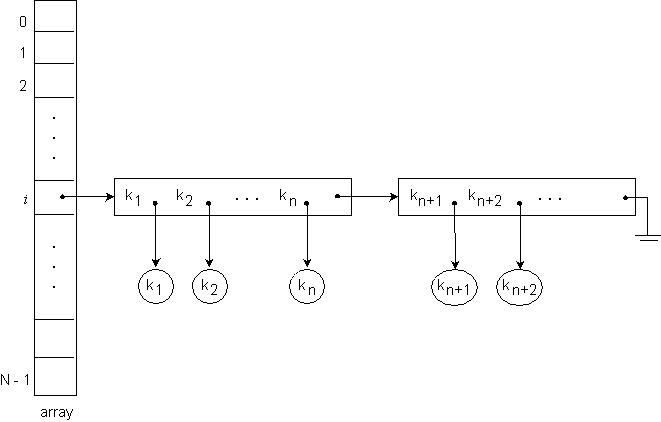

CS 332/780: Object-Oriented Databases Spring 2018
Course Notes #10
Keitaro Yukawa
Department of Computer Science
Queens College, CUNY
Let c be a collection of objects where each object of c is characterized by a certain property P.
An index on P for c is a data structure/algorithm for
efficiently retrieving objects of c having a given value of property P.
The minimum requirement on retrieval efficiency is that it should be faster than
the exhaustive scan of all elements of c searching for those with the given property value.
Asymptotically, retrieval efficiency should be
O(N) where N is the number of elements in c.
A typical example of property is a list of attributes, including extended attributes
reachable by chains of binary relations as described in Course Notes #5.
Let { A1, …, An } be a list of (extended) attributes of a class C
and let c be a collection of C-objects.
An index on { A1, …, An } for c is a data structure/algorithm for
efficiently retrieving objects of c having given values { a1, …, an } of
{ A1, …, An }.
A list of attribute values { a1, …, an } will be called an index value.
Hash Tables
A hash table is an array of pointers, each pointing to
a linked list of blocks/pages of the secondary storage.
The array will be denoted by T, indexed from 0 through N−1.
The blocks/pages in the linked lists will be called nodes.
Each node contains pairs (kj, pj) where kj is
an index value and pj is a pointer to the object whose index value is
kj or to a bucket of objects whose index values are all kj.
The index values contained in each linked list are distinct but need not be sorted.
All the nodes in each linked list are full possibly except the last node.

The linked list into which a given object is inserted is determined by
a hash function.
Let U be the set of all possible index values.
The hash function h maps U onto { 0, ..., N−1 }.
An object with index value k is inserted into the linked list at
T[h(k)].
Theoretical analysis has shown that the average time for
search, insertion, and deletion is minimized when the hash function h
distributes index values uniformly over { 0, ..., N−1 }
so that all the linked lists have approximately the same number of index values.
This property is known as the uniform hashing property,
and can be formalized as follows [1].
Let M be the total number of distinct index values existing in the entire hash table.
Let mi be a discrete random variable representing the number of index values in the linked list
at T[i], for each 0 ≤ i ≤ N−1,
with the constraint that m0 + ··· + mN−1 = M.
Let Pr{ mi = x } be the probability that the value of mi is equal to x.
Clearly, 0 ≤ x ≤ M holds.
Then the uniform hashing property is that the expected (i.e. mean) value of mi
is equal to M/N, that is,
E[mi] = ∑[0≤x≤M](x · Pr{mi = x}) = M/N,
for each 0 ≤ i ≤ N−1
In practice it is difficult to obtain hash functions with
the perfect uniform hashing property, and quest for such hash functions remains
an active research topic.
Nevertheless, quite a number of hash functions have been discovered which have the uniform hashing property
to good approximations,
and some of them are described in data structures and algorithms analysis books.
Search, insertion, and deletion algorithms are given below.
Search Algorithm
Search(k) // k is the index value of the object(s) to be searched.
{
i = h(k);
In the linked list pointed to by T[i], do linear search for k;
if ( k is found )
return the associated pointer to the object(s);
else
return null; // search failure
}
Insertion Algorithm
Insert(entry) // entry is the object to be inserted.
{
k = index[entry]; // extract the index value of entry
i = h(k);
In the linked list pointed to by T[i], do linear search for k;
if ( k is found )
{
if ( the index attribute or attribute list is a key )
return( Error: the object with index value k exists );
else
{
insert entry into the bucket of objects with index value k;
return();
}
}
else
{
if ( the last node in the linked list is not full )
{
insert entry into the last node;
return();
}
else
{
create a new node and append it to the linked list;
insert entry into the new node;
return();
}
}
}
Deletion Algorithm
Delete(k) /* k is the index value of the object to be deleted.
The index attribute or attribute list is assumed to be a key;
otherwise deletion operation for an index value k is ambiguous as
there may be multiple objects with value k. */
{
i = h(k);
In the linked list pointed to by T[i], do linear search for k;
if ( k is found )
{
delete the object with index value k;
if ( the deleted object is not the last one in the linked list )
move the last (index value, pointer) pair in the last node to the deleted position;
delete the last (index value, pointer) pair from the last node;
if ( the last node is empty )
delete the last node from the linked list;
return();
}
else
return( Error: there is no object with index value k );
}
Let us estimate the efficiency of the above three algorithms
in terms of the number of block accesses under the assumption of
the uniform hashing property.
By inspection of the algorithms, it is clear that their efficiency is
proportional to the approximate number of nodes per linked list.
Let M be the total number of index values in the hash table and
n the maximum number of index values that can be contained in each node.
Assuming the uniform hashing property,
the approximate number of nodes per linked list is
M/(N × n).
The value of n is usually constant as it is fixed by the sizes of a node (block), index value, and pointer.
(An exception would be when index values have variable size, like variable-size strings.)
If N and n are constant, it follows that M/(N × n) = Θ(M).
At first this seems to show that hash tables are less efficient than
B+ trees which have the asymptotic efficiency of Θ(log M).
However, the crucial point is that if N × n is sufficiently large,
then up to a certain threshold value of M,
M/(N × n) is smaller than the height of a B+ tree covering
the same number of index values,
hence hash tables will be more efficient than B+ trees
within this range of M.
Unlike B+ trees, however, hash tables do not maintain
index values in sorted order (even if a linear ordering can be defined over the indexes),
and therefore are vastly less efficient for
range queries to retrieve the objects whose index values
are in the range [k1, k2], k1 ≤ k2.
In order to process range queries, all index values in the table have to be inspected
exhaustively (but read Note at the end).
The hash table is a good candidate for an index structure
based on object identifiers/references to maintain collections of persistent class objects,
because the object identifiers/references do not come with any natural linear ordering.
In the above analysis we assumed the array size N is constant.
Since the total number M of index values usually changes over time,
dynamic adjustment of the array size N according to the value of M permits more economical use of
disk space and main memory occupied by the array.
Let us define the load factor α = M/(N × n),
the approximate number of nodes per linked list.
As the value of M changes over time, we keep the value of α
within a certain range by adjusting the value of N.
For example, let n = 250 and we wish to maintain 1 ≤ α ≤ 2.
Then N × 250 ≤ M ≤ 2(N × 250) must hold.
The values of N = 100, 200, 400 respectively permit
25000 ≤ M ≤ 50000,
50000 ≤ M ≤ 100000,
100000 ≤ M ≤ 200000.
This method is called dynamically extendible/contractible hash tables.
Since the hash function h depends on the array size N,
the values h(k) change when N is extended or contracted,
requiring re-hashing of the index values to new positions of the array.
Note on Range Queries
If the total number of all possible index values (not just those existing in the table)
in the range [k1, k2] is less than or
equal to about the array size N,
the following algorithm is more efficient than exhaustive search over the entire table.
But this algorithm requires the following two assumptions:
- U must be lineally ordered so that a "range" [k1, k2], k1 ≤ k2,
is well defined.
- All possible index values (not just those existing in the table) in the range
[k1, k2] can be scanned by a loop.
The algorithm is:
for ( each k in [k1, k2] )
{
p = Search(k);
if ( p ≠ null ) add p to the result collection;
}
Let r be the number of all possible values in [k1, k2].
In the worst case, Search(k) inspects all the nodes in a linked list, about
M/(N×n) nodes.
The efficiency of the above algorithm is therefore at most
(r×M)/(N×n).
The exhaustive search over the entire table inspects M/n nodes.
Hence the above algorithm is more efficient if
(r×M)/(N×n) ≤ M/n, i.e.,
r ≤ N.
For example, suppose N = 2,000,000.
For integer index values,
the above algorithm is more efficient if
k2−k1 ≤ 2,000,000.
For index values of time instants
(minute, hour, day, month, year) with the chronon of minute,
the above algorithm is more efficient if
k2−k1 ≤ 2,000,000 minutes ≈
1388.889 days ≈
3.805 years.
Consider the set U of the strings of the characters 'a' – 'z' of length 10,
ordered by the usual lexicographic ordering.
Assigning the ordinal numbers 0 – 25 to 'a' – 'z' and
regarding these strings as numbers in 26-radix notation,
the ordinal number of a string
c9c8 ··· c1c0 is defined to be:
c9·269 +
c8·268 +
··· +
c1·261 +
c0·260
where each ci denotes its ordinal number.
The difference between two strings
c9c8 ··· c1c0 and
d9d8 ··· d1d0 is then:
d9d8 ··· d1d0 −
c9c8 ··· c1c0 =
(d9−c9)·269 +
(d8−c8)·268 +
··· +
(d1−c1)·261 +
(d0−c0)·260
where di−ci denotes the difference of their ordinal numbers.
For example,
"aaaaaejuaa" − "aaaaaaaaaa" =
(e−a)·264 + (j−a)·263 + (u−a)·262 =
(4−0)·264 + (9−0)·263 + (20−0)·262 =
1,999,608
which is about 2,000,000.
This definition obviously generalizes to any fixed finite length of strings.
A linearly ordered U may not have the property that [k1, k2] has
a finite number of values.
A well-known example is the set of character strings of any variable finite lengths,
linearly ordered by a lexicographic ordering.
Between "a" and "b", for instance, there are infinitely many strings
"aa", "aaa", "aaaa", ... and so on.
The above algorithm does not work for such a U because
the values in [k1, k2] cannot be scanned by a terminating loop.
Reference
[1] T.H. Cormen, C.E. Leiserson, R.L. Rivest, and C. Stein. Introduction to Algorithms, 3rd edition.
The MIT Press, 2009.